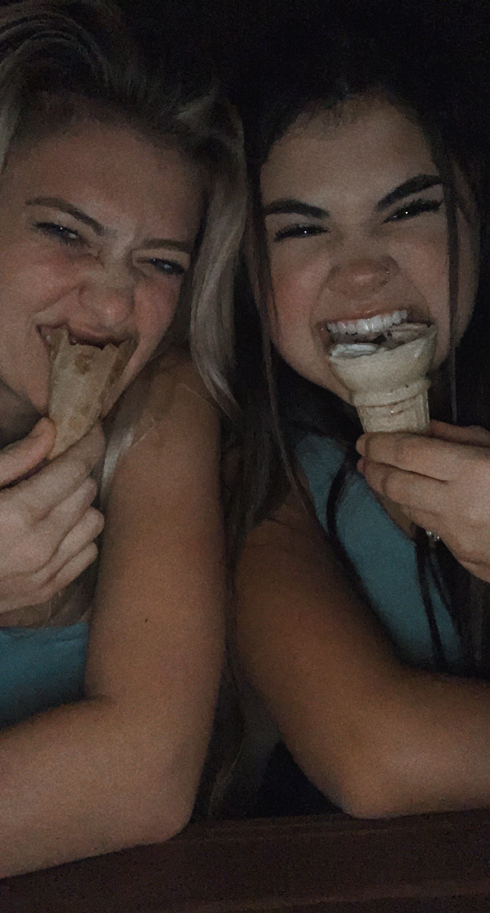

Experiment with block level styling while creating a sidebar, and creating links that stick at the top of the screen while scrolling farther down.
The main challenge that I had with this lab was choosing "div#links", instead of the proper "nav#links". After figuring out what was wrong with the CSS, everything ran smoothly, and worked how it was supposed to.
The links stick to the top of the page while scrolling, and the sidebar is also to the right side of the screen! Everything looks great!